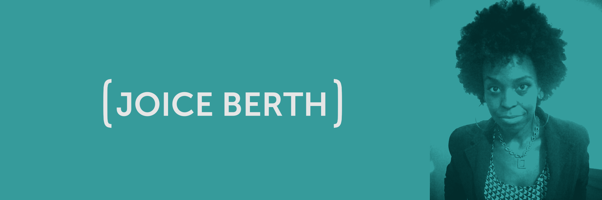
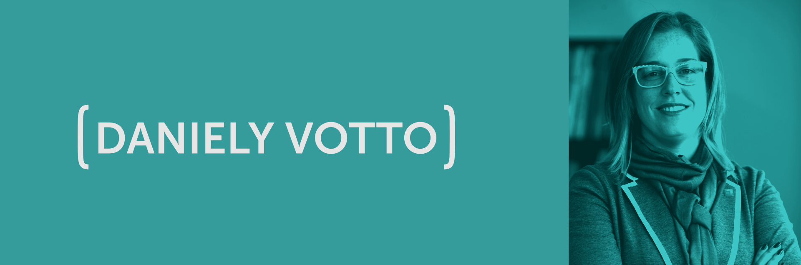
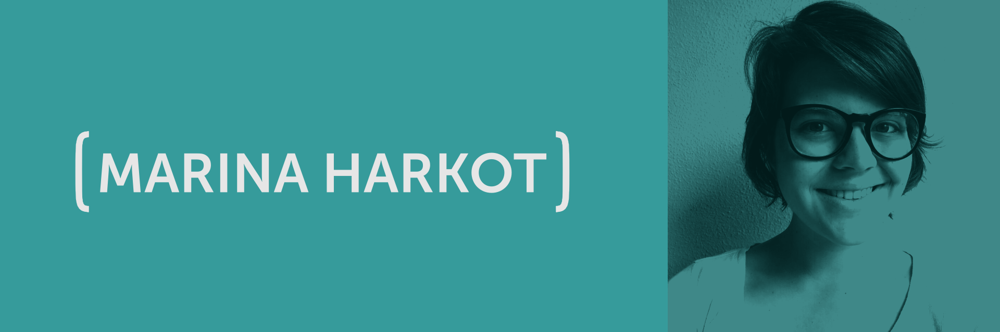

Cities for everyone
Inscrições abertas
A UPWIT (Unlocking the Power of Women in Technology) estimula a participação feminina na área de tecnologia por meio da criação de experiências. A cada encontro, conduzimos a discussão de um tema por meio das percepções de quatro convidadas e da promoção de uma experiência. Os painéis são dinâmicos e interativos, enquanto a parte prática propõe que as participantes se envolvam ativamente com o tema debatido. Esses encontros geram insights coletivos de produtos e serviços trazendo a perspectiva de gênero como centro da inovação, além do fortalecimento das mulheres no setor de tecnologia.
Line Up
- 14h - 14h30 - Recepção + Apresentação UP[W]IT
- 14h30 - 14h45 - Check-in: Quebra-gelo perguntas
- 14h45 - 16h15 - Aquário com as painelistas
- 16h15 - 16h30 - Break
- 16h30 - 19h - Workshop (inovações de gênero nas cidades)
- 19h - 19h15 - Check Out + Aplicação de pesquisa
[50% INSPIRAÇÃO 50% TRANSPIRAÇÃO]
[PARTE INSPIRAÇÃO]
A proposta do Cities For Everyone é repensar o planejamento de cidades a partir de uma perspectiva de gênero com auxílio de tecnologias. A programação terá início com um painel em formato de Aquário (Fishbowl) onde as painelistas e as participantes discutirão sobre os principais desafios enfrentados pelas mulheres no uso dos espaços urbanos. Conheça as painelistas:
Joice Berth é arquiteta e urbanista com atuação em Regularização Fundiária e Direito Urbanístico, pesquisadora e palestrante, presta consultoria sobre questões raciais, feminismo negro e direito à cidade. Colunista do site Justificando/Carta Capital e e-revista Língua de Trapo entre outros portais. Escritora participante da coletânea de textos “Negro Dorieu Videla” e Assessora Parlamentear do Vereador Eduardo Suplicy desde janeiro de 2017.
Daniely Votto é Gerente de Governança Urbana do WRI Brasil Cidades Sustentáveis. Antes de se juntar à equipe, ela trabalhou por três anos como Coordenadora de Relações Internacionais na Prefeitura Municipal de Porto Alegre, produtora executiva da Conferência Internacional Cidades Inovadoras (CICI) na Federação das Indústria do Paraná. Daniely já foi consultora da UNESCO, secretária executiva da World Conference on Development of Cities (Conferência Mundial para o Desenvolvimento das Cidades), assessora de assuntos internacionais para o Governo do Estado do Rio Grande do Sul e produtora executiva da Conferência Internacional Cidades Inovadoras (CICI). Formada pela PUC-RS, Daniely possui um MBA em Direito e especialização em Filosofia e Direito Civil.
Stella Hiroki é Mestre pelo departamento de Tecnologias da Inteligência e do Design Digital da PUCSP (2014) e doutoranda pelo mesmo departamento com o projeto sobre a questão das Smart People dentro das Smart Cities. Em 2015, participou do curso de verão na Singapore Management University sobre Inovação de Smart Cities na Ásia. Traz experiência sobre Cultura da Inovação, Business no Sudeste Asiático e Smart Cities.
Marina Harkot é cientista social e mestranda em planejamento urbano na FAUUSP, onde estuda desenvolvimento urbano e mobilidade urbana a partir de uma perspectiva de gênero. Faz parte da Ciclocidade e ocupa a cadeira da bicicleta no Conselho Municipal de Transporte e Trânsito na gestão 2016-2018.
[PARTE TRANSPIRAÇÃO]
Conduzido pelo Coletivo Mola, co-criaremos, por meio de metodologias de design thinking, soluções para as cidades com base nos desafios levantados no painel. Teremos com a gente makers, arquitetas, urbanistas, designers, engenheiras e especialistas no tema smart cities que nos ajudarão com essa missão :)
A ideia é que ao final do evento as soluções pensadas fiquem como um "banco de sugestões" para quem está pensando no desenvolvimento sustentável de cidades, podendo ser apresentado futuramente para Ongs e empresas que estão implementando tecnologias para cidades inteligentes.